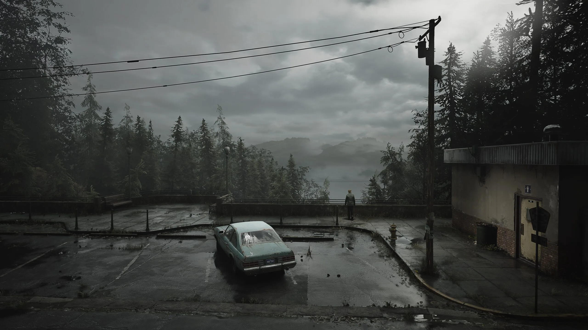

Silent Hill (サイレントヒル Sairento Hiru) é uma série de videogames de terror de sobrevivência produzidos e publicados pela Konami. Sua estreia foi no jogo de mesmo nome para PlayStation em fevereiro de 1999. Os primeiros quatro jogos da série, Silent Hill, Silent Hill 2, Silent Hill 3 e Silent Hill 4: The Room, foram desenvolvidos por um grupo interno chamado Team Silent. Um desenvolvimento dentro da antiga subsidiária da Konami Computer Entertainment. Os seis jogos subsequentes foram desenvolvidos por diferentes grupos e produtores. A franquia Silent Hill também gerou dois longas-metragens e uma série de jogos spin-off.
Você se encontra em uma paisagem envolta em mistério, onde a neblina parece um véu pesado, escondendo os segredos que estão nas sombras. Cada passo é uma excursão ao desconhecido enquanto sua mente mergulha em dúvidas e medos. O silêncio é garantido, interrompido apenas pelo zumbido do seu rádio. À medida que avança, você descobre pistas deixadas para trás, fragmentos de uma narrativa que se desenrola lentamente diante de seus olhos. Segredos do passado emergem das sombras, trazendo à tona memórias enterradas e verdades perturbadoras. Cada revelação é como uma carta rasgada, cortando as camadas de sua mente e expondo sua fragilidade.
“Meu nome é... Maria”, diz a mulher sorrindo. Seu rosto, sua voz... é igualzinho a ela.